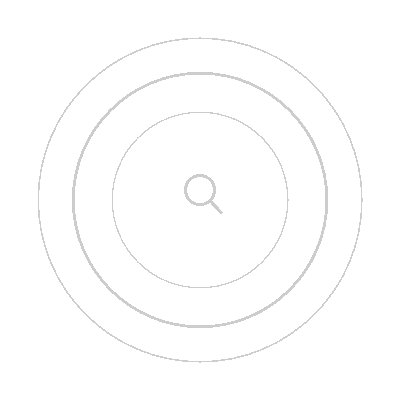
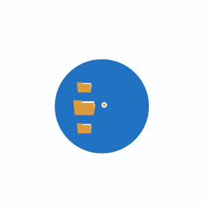
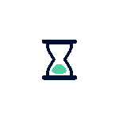
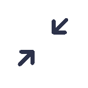

Situación/Dificultad
Imaginemos que tienes dificultades para recordar dónde dejaste ciertos objetos importantes en tu casa. A menudo pierdes las llaves, el teléfono o documentos importantes, lo cual te causa estrés y pérdida de tiempo buscándolos. La dificultad radica en la falta de un sistema eficiente para gestionar y recordar la ubicación de estos objetos en tu entorno doméstico.
Para situaciones donde el olvido de objetos es inevitable, presentamos "Find My Stuff", una innovadora aplicación diseñada para resolver esta problemática de manera efectiva.

Características de la Aplicación:
| Registro de Objetos: | Permite a los usuarios registrar y catalogar diferentes objetos importantes que suelen extraviarse, como llaves, teléfono, billetera, etc. |
|---|---|
| Etiquetado y Ubicación: | Los usuarios pueden etiquetar cada objeto registrado y asociarlo con su ubicación específica en la casa. Por ejemplo, "Llaves - Mesita de entrada" o "Billetera - Cajón del escritorio". |
| Búsqueda Rápida: | Ofrece una función de búsqueda rápida que permite a los usuarios buscar un objeto específico y muestra la última ubicación registrada. |
| Recordatorios Personalizados: | Permite configurar recordatorios para revisar la ubicación de objetos en momentos específicos del día o cuando se sale de casa. |
| Notificaciones de Distancia: | Si el usuario sale de casa sin un objeto registrado, la aplicación envía una notificación para recordarle llevarlo consigo. |
| Historial de Movimientos: | Registra el historial de movimientos de cada objeto, ayudando a los usuarios a rastrear dónde han estado y cuándo fue la última vez que se vieron. |
Cómo Atacaría la Problemática
Organización Eficiente:
Ayuda a organizar y mantener un registro sistemático de los objetos importantes, evitando pérdidas y olvidos.
Ahorro de Tiempo:
Reduce el tiempo perdido buscando objetos extraviados al proporcionar información precisa sobre su ubicación.
Reducción de Estrés:
Minimiza la ansiedad y el estrés asociados con la pérdida de objetos personales importantes.
Mejora de la Productividad:
Permite a los usuarios concentrarse en actividades importantes en lugar de perder tiempo en la búsqueda de objetos.